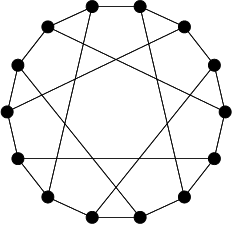
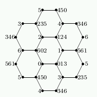

Percy John Heawood (1861-1955) was an English mathematician who spent a large amount of time on questions related to the four colour theorem.

There is a unique distance-regular graph Γ with intersection array {3,2,2;1,1,3}. It has 14 vertices and spectrum 31 (√2)6 (–√2)6 (–3)1. It is the point-line incidence graph of the Fano plane, and is commonly called the Heawood graph. It occurs as subgraph of the Hoffman-Singleton graph.
It is the unique (3,6)-cage: the regular cubic graph of girth 6 with minimal number of vertices.
a) A partition of the edges into three matchings. There are 8 of these, forming a single orbit. The stabilizer of one is 7:6, with vertex orbit size 14. (There are 24 matchings. The complement of a matching is a 14-cycle that decomposes uniquely into two matchings. So, matchings come in groups of three.)
b) A vertex. There are 14 of these, forming a single orbit. The stabilizer of one is S4, with vertex orbit sizes 1+3+6+4.
c) An edge. There are 21 of these, forming a single orbit. The stabilizer of one is D16, with vertex orbit sizes 2+4+8. These correspond to the flags of the Fano plane.
d) A crossing non-edge. (The graph is bipartite; a crossing non-edge is a non-edge meeting both sides of the bipartition.) There are 28 of these, forming a single orbit. The stabilizer of one is D12, with vertex orbit sizes 2+6+6. These correspond to the antiflags of the Fano plane. The graph on the crossing non-edges, adjacent when their union is a 4-coclique, is the Coxeter graph.
